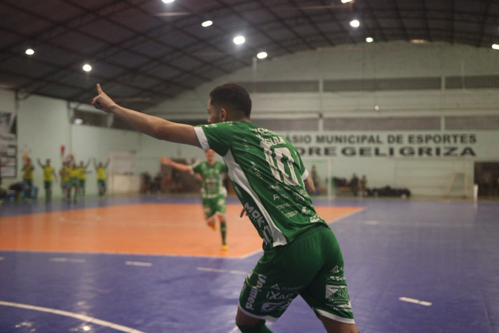
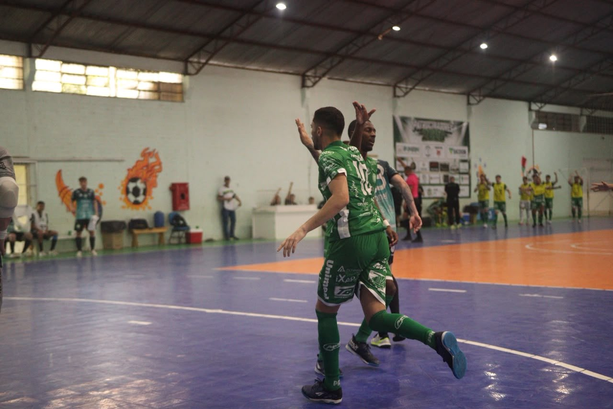

Chapecó está etapa estadual dos Jogos Abertos de Santa Catarina no futsal masculino. A equipe Prefeitura/Chapecoense/Unochapecó garantiu uma das três vagas do Oeste para o torneio. A classificação foi conquistada com a vitória por 2 a 1 sobre Pinhalzinho, na tarde deste domingo (20), no Ginásio Padre Geli Griza, em Ipumirim.

Contra o time da Pinhalense, líder da Série Prata do Catarinense, o Verdão das Quadras decidiu a medalha de bronze e, consequentemente, a terceira e última vaga da região para os JASC 2026 em Rio do Sul, que será de 13 a 28 de novembro. Pela manhã, a Chape acabou superada por São Lourenço do Oeste (3 a 2) na semifinal, com dois gols sofridos no fim – um faltando 54 segundos e o outro a dois segundos do término. Antes, no outro cruzamento, Pinhalzinho perdeu por 4 a 2 para o Concórdia.
Os três gols do confronto foram marcados no primeiro tempo. O pivô Trentin abriu o placar para a Chape. Igor Alemão empatou para Pinhalzinho, mas Kassula garantiu o triunfo verde-branco. Assim, Chapecó representará a região na fase estadual dos JASC ao lado de São Lourenço do Oeste e Concórdia. Os duelos eliminatórios da etapa Oeste (sábado e domingo) ocorreram em Ipumirim devido à umidade da quadra do Ginásio Carecão, em Seara, sede oficial da modalidade.

10 jogos em setembro
No regional, a Chapecoense disputou seis duelos. Pela chave B, venceu Saudades (2 a 1), Cunha Porã (4 a 1) e empatou com Arabutã (2 a 2). Entretanto, a equipe de Arabutã acabou excluída da disputa por usar um jogador irregular. Depois, o Verdão das Quadras ganhou de Seara (3 a 2) nas eliminatórias, antes de encarar São Lourenço e Pinhalzinho. Contabilizando Brasileiro, Série Ouro Catarinense e Copa SC, a Chape Futsal já fez 10 jogos no mês de setembro.
Copa Sul
Agora, o foco da Chapecoense passa a ser a Copa Sul. O torneio acontece na Arena Ivo Sguissardi, em Xanxerê, começa nesta quarta-feira (23) e vai até o próximo domingo (27). Os bilhetes já podem ser adquiridos pelo site ingressojogo.com.br, nas lojas Oficial da Chape Futsal (anexa à Classic Uniformes) e iXap Sports, e a partir das 11h desta segunda-feira (21) no local das partidas.
Crédito das fotos: @rogersilva_fotografia/@achapefutsal